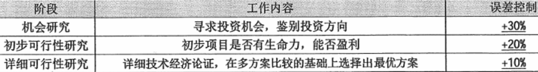

分值：2分
项目立项主要活动
- 提交项目建议书
- 项目可行性研究
- 项目论证
- 项目评估
- 项目招标和投标
- 签订合同
项目建议书
项目建设单位向上级主管部门提交项目申请时的文件，核心内容为：
- 项目的必要性
- 项目的市场预测
- 产品方案或服务的市场预测
- 项目建设必需的条件
可行性分析
- 技术可行性考虑因素
- 进行项目的风险
- 人力资源的有效性
- 技术能力的可能性
- 物资（产品）的可用性
- 经济可行性
- 支出分析
- 收益分析
- 投资回报分析
- 敏感性分析
分析前期的四个阶段
- 机会研究
- 初步可行性研究
- 详细可行性研究
- 评估与决策
初步可行性评估
- 分析项目的前途，从而决定是否继续深入调查研究
- 初步估计和确定项目中的关键技术和核心问题，以确定是否需要解决
- 初步估计必须进行的辅助研究，已解决项目的核心问题，并判断是否具备必要的技术、实验、人力条件作为支持
详细可行性研究报告的内容
- 概述
- 需求确定
- 现有资源、设施情况分析
- 设计（初步）技术方案
- 项目实施进度计划建议
- 投资估算和资金筹措计划
- 项目组织、人力资源、技术培训计划
- 经济和社会效益分析
- 合作/协作方式
项目论证
三个方面进行调查和分析
- 市场需求：前提
- 开发技术：手段
- 财务经济：核心
项目前评价论证的作用
- 项目论证是确定项目是否实施的依据
- 项目论证是筹措资金、向银行贷款的依据
- 项目论证是编制计划、设计、采购、施工以及机构设备、资源配置的依据
- 项目论证是防范风险、提高项目效率的重要保障
项目论证的三个阶段

项目评估
概述
在可行性研究基础上，由第三方（国家、银行、有关机构）进行评估，最终成果是项目评估报告。
项目评估的依据
- 项目建议书及其批准文件
- 项目可行性研究报告
- 报送单位的申请报告和主管部门的初审意见
- 有关资源、配件、燃料、水、电、交通、通信、资金等方面的协议文件
- 必须的其他文件和资料
开发总成本
- 经营成本
- 研发成本
- 行政管理费
- 销售和分销费用
- 财务费用和折旧